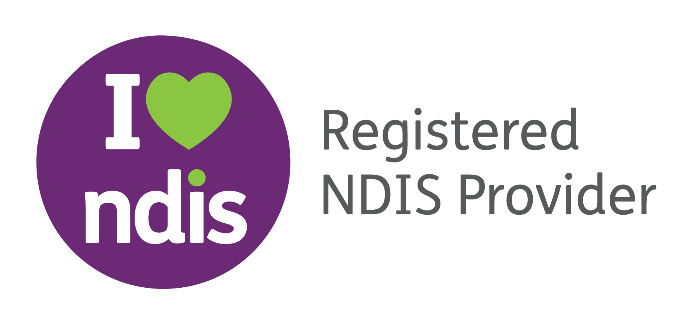

Skip to content
Registered NDIS Provider · Cairns & surrounds
0476 473 703
·
palmreach@outlook.com.au
Palm
reach
SUPPORT SERVICES

Home
About
Services
Service Areas
Referrals
Contact
Refer a Participant
☰
Page not found
Return to the Palmreach homepage.
Home
CALL
REQUEST
REFER